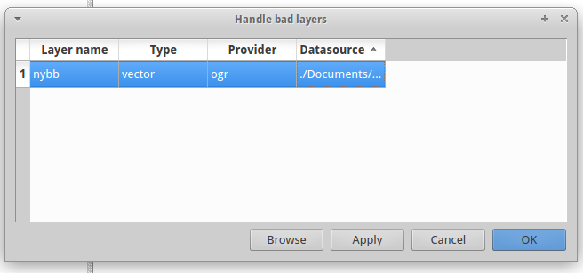
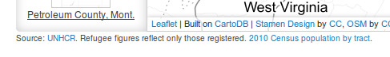

Welcome to Methods 3, Lecture 4
This is a web page that can be viewed as slides.
→ to move forward
← to go back
Methods 3
Please download this data:
bit.ly/1wxITaC
It's also in Canvas
(review)
Choropleth?

Louisiana Loses Its Boot
"Using publicly available data, [we] created a map on which areas that commonly appear as land on government issued maps—woody wetlands, emergent herbaceous wetlands and barren land—were re-categorized to appear as water."
Managing files in a project

Opening CSVs
Adding base layers a map
Start thinking about methodology

What is a GIS for?
- Viewing geodata
- Styling geodata
What is a GIS for?
- Viewing geodata
- Styling geodata
- Modfiying geodata
What is a GIS for?
- Viewing geodata
- Styling geodata
- Modifying geodata
- Understanding / analyzing geodata
Geoprocessing
Intersect

Union

Joins
Spatial Joins
When you have layers that both have geographic features
Works best when you have:
- polygons that don't overlap and
- points or smaller polygons that fall within them
Attribute Joins
When you have a layer without geographic features
Ideally:
- unique identifiers between layers
- each feature has at most one row to connect to